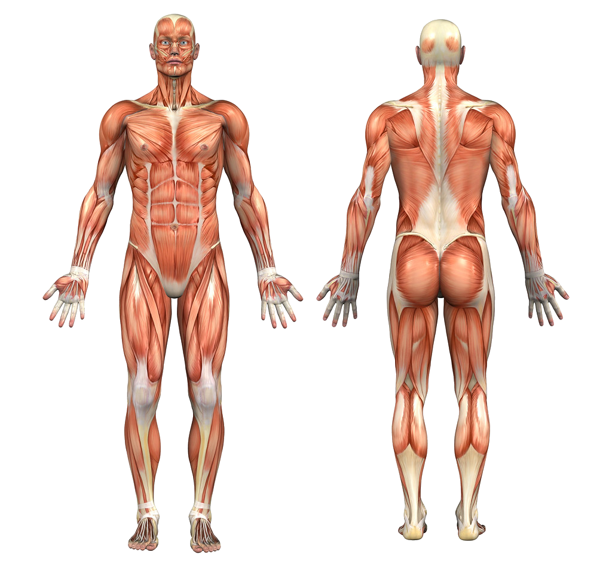

СЗАДИ |
СПЕРЕДИ |
Список всех мышц: | |||
|  | Грудная м.Прямая м. животаНаружная косая м. животаМимические и жевательные м. животаМышцы шеиДельтовидная м.Ягодичная м.Широчайшая м. спиныТрапециевидная м.Подостная м.Двуглавая м. плеча (бицепс)Трёхглавая м. плеча (трицепс)Плечелучевая м.Локтевой сгибатель запястьяЛучевой сгибатель запястьяДлинная ладонная м.Разгибатель пальцевЛоктевой разгибатель запястьяИкроножная м.Портняжная м.Четырёхглавая м. бедраБольшая приводящая м.Двуглавая м. бедраПередняя большеберцовая м. | ||||